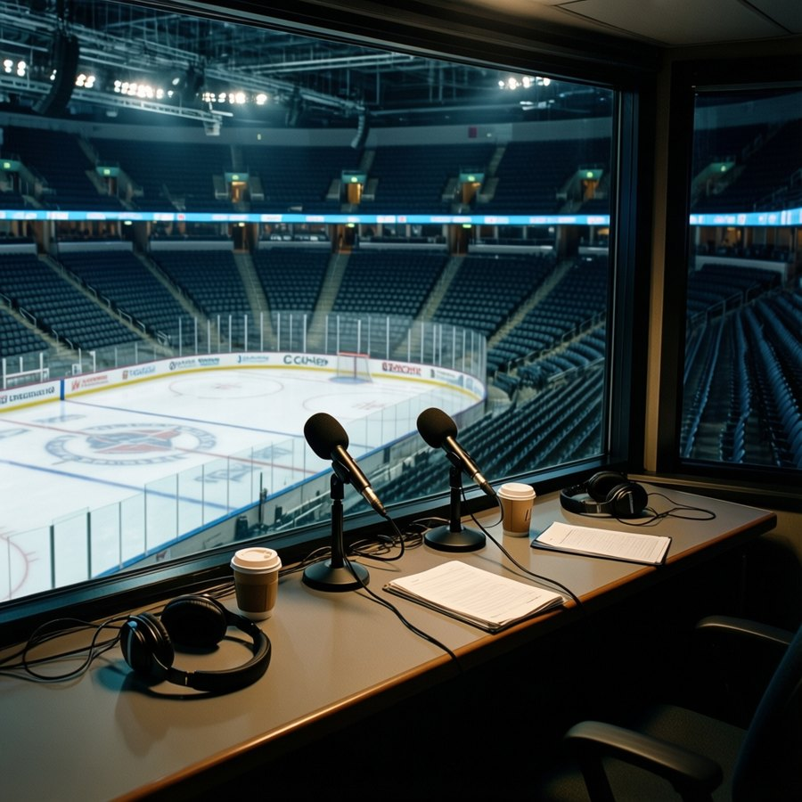
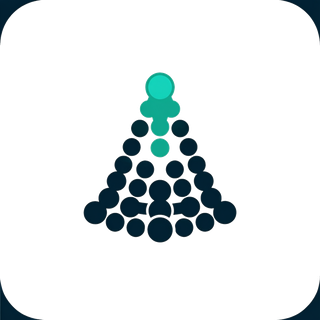
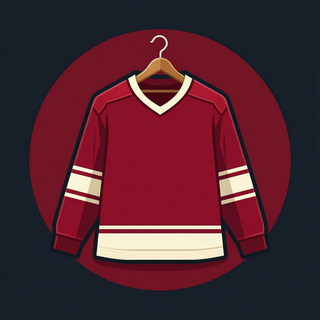
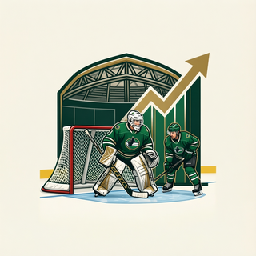
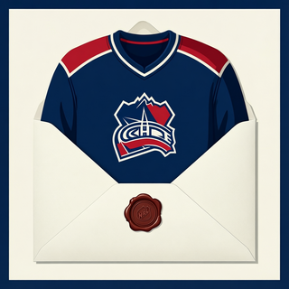

Ep. 38 · Fortnight Recap: Eight Unhappy Clubs and a Perfect Bracket
Gord Tessier and Dana Whitlock on Wednesday, 20 April 2005 to Tuesday, 3 May 2005: 40 pieces from 11 desks.
Download · 33 MB
Show notes
What the hosts read this week. Every figure in the episode traces to one of these.

The Slot Report- 5 of 6: The League's Biggest Form Risers Play for Teams That Missed the Playoffs 30 Apr 2005
- The Ledger Picks 4 of 4 in Round 2. In Round 1 It Picked 3 of 8. 26 Apr 2005
- 9 of the 10 Unhappiest Clubs Are Home. The 10th Opens Round 2 Tonight. 23 Apr 2005
- Dollar-per-Point Faces Four Clean Tests: Which Round 2 Series Does the Metric Have the Most Confidence In? 21 Apr 2005
- CONS 50: The One Number That Explains Why the 1 Seed Went Home 21 Apr 2005
- 671 Days Against 95: The Two Most Unequal Matchups in the East's Second Round 21 Apr 2005
Rinkside
- The 226th Pick Is the Best Player in the Building: Tomas Vokoun, $0.90M, and the $27.16M Foundation 30 Apr 2005
- All-Rookie at 23, Leading Playoff Scorer at 30: Mike Johnson and the Nine Years in Between 26 Apr 2005
- He Was the First Pick for a Reason: Vincent Lecavalier, 146 Pace, and the Run Tampa Bay Almost Missed Without Him 23 Apr 2005
Queen City Telegram
- Young Guns Watch: the Development Index risers who carry Toronto through June 30 Apr 2005
- LEAFS 0, PENGUINS 2, series 3-2: the ankle that takes 99 points off the ice 30 Apr 2005
- DANFORTH: Code Orange, the 0 I cannot explain, and a return date that reads like a goodbye 30 Apr 2005
- THE PANIC METER, PLAYOFF EDITION: Code Yellow, and the kid who plays second centre 26 Apr 2005
- LEAFS 4, PENGUINS 2, series 2-1: Gaborik reaches 10, Luongo holds at 1.73 26 Apr 2005
- LEAFS 1, PENGUINS 3, series 0-1: 19 shots at home, and the fourth line gets a new centre 23 Apr 2005
- DANFORTH: Code Orange, and the 19 shots I cannot get past 23 Apr 2005
 The Prospect File
The Prospect File
The Penalty Box
The Hot Stove
- Pick Stockpilers: STL Holds 8 Picks, 2 Firsts, and a $9.50M Blue-Liner About to Walk 30 Apr 2005
- RUMOR METER: TB Signs Its Co-Leading Playoff Scorer. He's on IR in 3 Days. The Pattern Sits at 6 of 9. 🔥🔥 26 Apr 2005
- Sources: 5 of the League's 15 Lowest Morales Wear Edmonton. Game 1 Is Tonight. 23 Apr 2005
Home Ice Network
- ANA take it in overtime, 3-2 over EDM 30 Apr 2005
- WSH take it in overtime, 4-3 over TB 26 Apr 2005
- RECAP: Washington 3, Tampa Bay 1 -- the Capitals are one win from a sweep 26 Apr 2005
- Numbers Game: Mike Johnson has 12 and the 8th seed still breathes 26 Apr 2005
- Series Check: Tampa Bay and Washington open a second-round fight between the best defense and the most punishment 23 Apr 2005
- RECAP: Pittsburgh 3, Toronto 1 — Hedberg holds, and the line shuffle didn't help 23 Apr 2005
The Hockey Gazette
- The Bracket, April 30: Washington goes 8-0, and three series land tonight or tomorrow 30 Apr 2005
- The Bracket, April 26: One club has not lost, and three series turn on a single game 26 Apr 2005
- The Bracket, April 23: Pittsburgh won Game 1 at Toronto, and 3 of 4 second-round series have yet to open 23 Apr 2005

The Sweater
The Building
The PostbagThe hosts
Gord TessierHost, thirty years of play-by-play
Thirty years of radio play-by-play in the Ontario junior leagues. Thinks in streaks and seasons, loves a comeback, and has seen this movie before.
Dana WhitlockHost, fourteen years on the beat
Fourteen years on the Northeast beat. Reads the Bureau's indices like the weather, keeps a notebook of who said what, and asks what the Wire has confirmed.